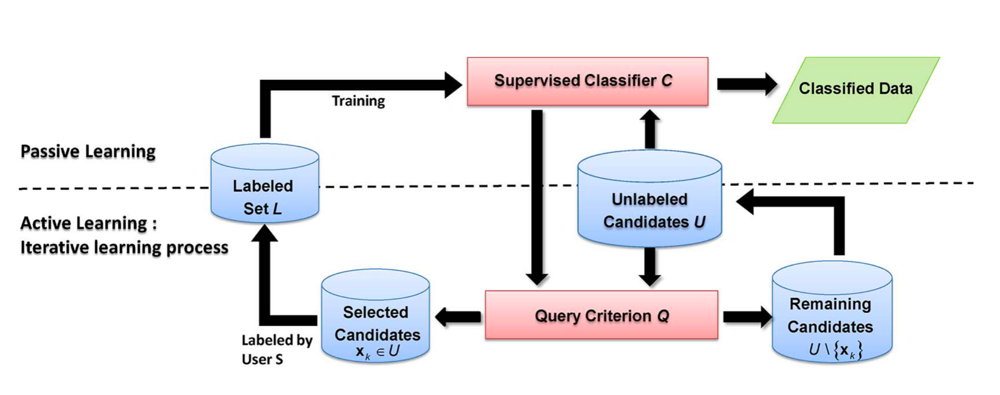
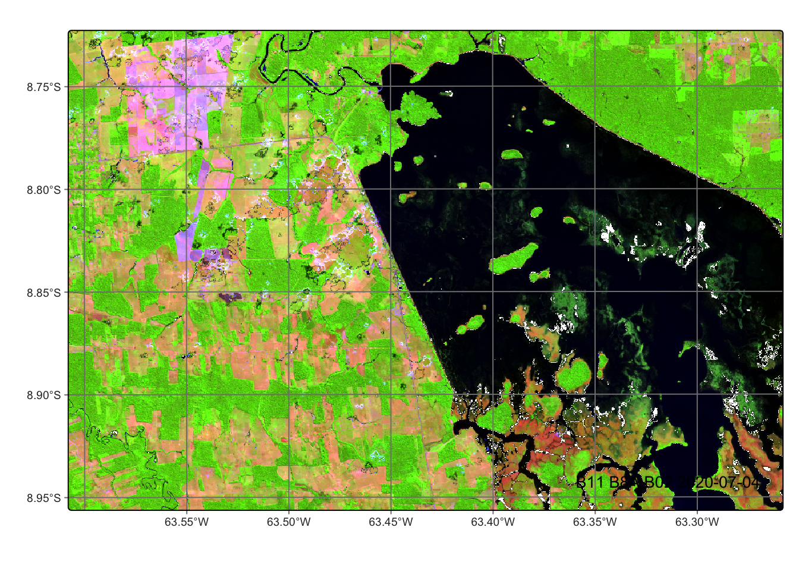

# load packages "torch" and "luz"
library(torch)
library(luz)
torch::install_torch()
# load packages "sits" and "sitsdata"
library(sits)
library(sitsdata)
# set tempdir if it does not exist
tempdir_r <- "~/sitsbook/tempdir/R/cl_uncertainty"
dir.create(tempdir_r, showWarnings = FALSE)18 Uncertainty and active learning
Configurations to run this chapter

18.1 Introduction
Land classification tasks have unique characteristics that differ from other machine learning domains, such as image recognition and natural language processing. The main challenge for land classification is to describe the diversity of the planet’s landscapes in a handful of labels. However, the diversity of the world’s ecosystem makes all classification systems to be biased approximations of reality. As stated by Murphy: “The gradation of properties in the world means that our smallish number of categories will never map perfectly onto all objects” [1]. For this reason, sits provides tools to improve classifications using a process called active learning.
18.2 Active learning
Active learning is an iterative process of sample selection, labeling, and model retraining. The following steps provide a general overview of how to use active learning:
- Collect initial training samples: Start by collecting a small set of representative training samples that cover the range of land classes of interest.
- Train a machine learning model: Use the initial training samples to train a machine learning model to classify remote sensing data.
- Classify the data cube using the model.
- Identify areas of uncertainty.
- Select samples for re-labeling: Select a set of unlabeled samples that the model is most uncertain about, i.e., those that the model is least confident in classifying.
- Label the selected samples: The user labels the selected samples, adding them to the training set.
- Retrain the model: The model is retrained using the newly labeled samples, and the process repeats itself, starting at step 2.
- Stop when the classification accuracy is satisfactory: The iterative process continues until the classification accuracy reaches a satisfactory level.
In traditional classification methods, experts provide a set of training samples and use a machine learning algorithm to produce a map. By contrast, the active learning approach puts the human in the loop [2]. At each iteration, an unlabeled set of samples is presented to the user, which assigns classes to them and includes them in the training set [3]. The process is repeated until the expert is satisfied with the result, as shown in Figure 18.1.

Active learning aims to reduce bias and errors in sample selection and, as such, improve the accuracy of the result. At each interaction, experts are asked to review pixels where the machine learning classifier indicates a high uncertainty value. Sources of classification uncertainty include missing classes and or mislabeled samples. In sits, active learning is supported by functions sits_uncertainty() and sits_uncertainty_sampling().
18.3 Measuring uncertainty
Uncertainty refers to the degree of doubt or ambiguity in the accuracy of the classification results. Several sources of uncertainty can arise during land classification using satellite data, including:
- Classification errors: These can occur when the classification algorithm misinterprets the spectral, spatial or temporal characteristics of the input data, leading to the misclassification of land classes.
- Ambiguity in classification schema: The definition of land classes can be ambiguous or subjective, leading to inconsistencies in the classification results.
- Variability in the landscape: Natural and human-induced variations in the landscape can make it difficult to accurately classify land areas.
- Limitations of the data: The quality and quantity of input data can influence the accuracy of the classification results.
Quantifying uncertainty in land classification is important for ensuring that the results are reliable and valid for decision-making. Various methods, such as confusion and error matrices, can be used to estimate and visualize the level of uncertainty in classification results. Additionally, incorporating uncertainty estimates into decision-making processes can help to identify regions where further investigation or data collection is needed.
The function sits_uncertainty() calculates the uncertainty cube based on the probabilities produced by the classifier. It takes a probability cube as input. The uncertainty measure is relevant in the context of active learning. It helps to increase the quantity and quality of training samples by providing information about the model’s confidence. The supported types of uncertainty are ‘entropy’, ‘least’, ‘margin’, and ‘ratio’.
Least confidence sampling is the difference between no uncertainty (100% confidence) and the probability of the most likely class, normalized by the number of classes. Let \(P_1(i)\) be the higher class probability for pixel \(i\). Then least confidence sampling is expressed as
\[ \theta_{LC} = (1 - P_1(i)) * \frac{n}{n-1}. \]
Margin of confidence is the difference between the two most confident predictions, expressed from 0% (no uncertainty) to 100% (maximum uncertainty). Let \(P_1(i)\) and \(P_2(i)\) be the two higher class probabilities for pixel \(i\). Then, the margin of confidence is expressed as
\[ \theta_{MC} = (P_1(i) - P_2(i)). \]
The ratio of confidence is the measure of the ratio between the two most confident predictions, expressed in a range from 0% (no uncertainty) to 100% (maximum uncertainty). Let \(P_1(i)\) and \(P_2(i)\) be the two higher class probabilities for pixel \(i\). Then, the ratio of confidence is expressed as \[ \theta_{RC} = \frac{P_2(i)}{P_1(i)}. \]
Entropy is a measure of uncertainty used by Claude Shannon in his classic work “A Mathematical Theory of Communication”. It is related to the amount of variability in the probabilities associated with a pixel. The lower the variability, the lower the entropy. Let \(P_k(i)\) be the probability of class \(k\) for pixel \(i\). The entropy is calculated as \[ \theta_{E} = \frac{-\sum_{k=1}^K P_k(i) * log_2(P_k(i))}{log_2{n}}. \]
The parameters for sits_uncertainty() are: cube, a probability data cube; type, the uncertainty measure (default is least). As with other processing functions, multicores is the number of cores to run the function and memsize is the maximum overall memory (in GB) to run the function, output_dir is the output directory for image files, and version is the result version.
Using uncertainty measures for active learning
The following case study shows how uncertainty measures can be used in the context of active learning. The study area is a subset of one Sentinel-2 tile in the state of Rondonia, Brazil. The work aims to detect deforestation in Brazilian Amazonia.
The study area is close to the Samuel Hydroelectric Dam, located on the Madeira River in the Brazilian state of Rondônia. Building the dam led to a loss of 56,000 ha of native forest. The dam’s construction caused the displacement of several indigenous communities and traditional populations, leading to social and cultural disruption. Additionally, flooding large forest areas resulted in losing habitats and biodiversity, including several endangered species. The dam has altered the natural flow of the Madeira River, leading to changes in water quality and temperature and affecting the aquatic life that depends on the river. The changes in river flow have also impacted the navigation and transportation activities of the local communities [4].
The first step is to produce a regular data cube for the chosen area from 2020-06-01 to 2021-09-01. To reduce processing time and storage, we use only three bands (B02, B8A, and B11) plus the cloud band, and take a small area inside the tile. After obtaining a regular cube, we plot the study area in two dates during the temporal interval of the data cube. The first image is taken at the beginning of the dry season in 2020-07-04, when the inundation area of the dam was covered by shallow water.
# Select a S2 tile
s2_cube_ro <- sits_cube(
source = "AWS",
collection = "SENTINEL-S2-L2A-COGS",
tiles = "20LMR",
bands = c("B02", "B8A", "B11", "SCL"),
start_date = as.Date("2020-06-01"),
end_date = as.Date("2021-09-01"),
progress = FALSE
)
# Select a small area inside the tile
roi = c(lon_max = -63.25790, lon_min = -63.6078,
lat_max = -8.72290, lat_min = -8.95630)
# Regularize the small area cube
s2_reg_cube_ro <- sits_regularize(
cube = s2_cube_ro,
output_dir = tempdir_r,
res = 20,
roi = roi,
period = "P16D",
multicores = 4,
progress = FALSE
)plot(s2_reg_cube_ro,
red = "B11",
green = "B8A",
blue = "B02",
date = "2020-07-04")
The second image is from 2020-11-09 and shows that most of the inundation area dries during the dry season. In early November 2020, after the end of the dry season, the inundation area is dry and has a response similar to bare soil and burned areas. The Madeira River can be seen running through the dried inundation area.
plot(s2_reg_cube_ro,
red = "B11",
green = "B8A",
blue = "B02",
date = "2020-11-09")
The third image is from 2021-08-08. In early August 2021, after the wet season, the inundation area is again covered by a shallow water layer. Several burned and clear-cut areas can also be seen in the August 2021 image compared with the July 2020 one. Given the contrast between the wet and dry seasons, correct land classification of this area is hard.
plot(s2_reg_cube_ro, red = "B11", green = "B8A", blue = "B02", date = "2021-08-08")
The next step is to classify this study area using a training set with 480 times series collected over the state of Rondonia (Brazil) for detecting deforestation. The training set uses 4 classes (Burned_Area, Forest,Highly_Degraded, andCleared_Area`). The cube is classified using a Random Forest model, post-processed by Bayesian smoothing, and then labeled.
set.seed(290356)
library(sitsdata)
# Load the training set
data("samples_prodes_4classes")
# Select the same three bands used in the data cube
samples_4classes_3bands <- sits_select(
data = samples_prodes_4classes,
bands = c("B02", "B8A", "B11"))
# Train a random forest model
rfor_model <- sits_train(
samples = samples_4classes_3bands,
ml_method = sits_rfor())
# Classify the small area cube
s2_cube_probs <- sits_classify(
data = s2_reg_cube_ro,
ml_model = rfor_model,
output_dir = tempdir_r,
memsize = 15,
multicores = 5)
# Post-process the probability cube
s2_cube_bayes <- sits_smooth(
cube = s2_cube_probs,
output_dir = tempdir_r,
memsize = 16,
multicores = 4)
# Label the post-processed probability cube
s2_cube_label <- sits_label_classification(
cube = s2_cube_bayes,
output_dir = tempdir_r,
memsize = 16,
multicores = 4)
plot(s2_cube_label)
The resulting map correctly identifies the forest area and the deforestation. However, it misclassifies the area covered by the Samuel hydroelectric dam. The reason is the lack of samples for classes related to surface water and wetlands. To improve the classification, we need to improve our samples. To do that, the first step is to calculate the uncertainty of the classification.
# Calculate the uncertainty cube
s2_cube_uncert <- sits_uncertainty(
cube = s2_cube_bayes,
type = "margin",
output_dir = tempdir_r,
memsize = 16,
multicores = 4)
plot(s2_cube_uncert)
As expected, the places of highest uncertainty are those covered by surface water or associated with wetlands. These places are likely to be misclassified. For this reason, sits provides sits_uncertainty_sampling(), which takes the uncertainty cube as its input and produces a tibble with locations in WGS84 with high uncertainty. The function has three parameters: n, the number of uncertain points to be included; min_uncert, the minimum value of uncertainty for pixels to be included in the list; and sampling_window, which defines a window where only one sample will be selected. The aim of sampling_window is to improve the spatial distribution of the new samples by avoiding points in the same neighborhood to be included. After running the function, we can use sits_view() to visualize the location of the samples.
# Find samples with high uncertainty
new_samples <- sits_uncertainty_sampling(
uncert_cube = s2_cube_uncert,
n = 20,
min_uncert = 0.5,
sampling_window = 10)sits_view(new_samples)The visualization shows that the samples are located in the areas covered by the Samuel data. Thus, we designate these samples as Wetlands. A more detailed evaluation, which is recommended in practice, requires analysing these samples with an exploration software such as QGIS and individually labeling each sample. In our case, we will take a direct approach for illustration purposes.
# Label the new samples
new_samples$label <- "Wetland"
# Obtain the time series from the regularized cube
new_samples_ts <- sits_get_data(
cube = s2_reg_cube_ro,
samples = new_samples)
# Join the new samples with the original ones with 4 classes
samples_round_2 <- dplyr::bind_rows(
samples_4classes_3bands,
new_samples_ts)
# Train a RF model with the new sample set
rfor_model_v2 <- sits_train(
samples = samples_round_2,
ml_method = sits_rfor())
# Classify the small area cube
s2_cube_probs_v2 <- sits_classify(
data = s2_reg_cube_ro,
ml_model = rfor_model_v2,
output_dir = tempdir_r,
version = "v2",
memsize = 16,
multicores = 4)
# Post-process the probability cube
s2_cube_bayes_v2 <- sits_smooth(
cube = s2_cube_probs_v2,
output_dir = tempdir_r,
version = "v2",
memsize = 16,
multicores = 4)
# Label the post-processed probability cube
s2_cube_label_v2 <- sits_label_classification(
cube = s2_cube_bayes_v2,
output_dir = tempdir_r,
version = "v2",
memsize = 16,
multicores = 4)
# Plot the second version of the classified cube
plot(s2_cube_label_v2)The results show a significant quality gain over the earlier classification. There are still some areas of confusion in the exposed soils inside the inundation area, some of which have been classified as burned areas. It is also useful to show the uncertainty map associated with the second model.
# Calculate the uncertainty cube
s2_cube_uncert_v2 <- sits_uncertainty(
cube = s2_cube_bayes_v2,
type = "margin",
output_dir = tempdir_r,
version = "v2",
memsize = 16,
multicores = 4)
plot(s2_cube_uncert_v2)
As the new uncertainty map shows, there is a significant improvement in the quality of the classification. The remaining areas of high uncertainty are those affected by the contrast between the wet and dry seasons close to the inundation area. These areas are low-laying places that sometimes are covered by water and sometimes are bare soil areas throughout the year, depending on the intensity of the rainy season. To further improve the classification quality, we could obtain new samples of those uncertain areas, label them, and add them to samples.
18.4 Summary
In general, as this Chapter shows, combining uncertainty measurements with active learning is a recommended practice for improving classification results. This approach offers several important benefits for remote sensing image classification, especially in contexts where obtaining high-quality labeled data is expensive and time-consuming. Uncertainty maps direct expert to places where new samples are required. In this way, combnining uncertainty with active learning minimizes the number of samples that need to be manually labeled by selecting the most informative ones.
References
[1]
G. L. Murphy, The Big Book of Concepts. Cambridge, MA, USA: Bradford Books, 2002.
[2]
R. Monarch, Human-in-the-Loop Machine Learning. Shelter Island, NY: Manning Publications, 2021.
[3]
M. M. Crawford, D. Tuia, and H. L. Yang, “Active Learning: Any Value for Classification of Remotely Sensed Data?” Proceedings of the IEEE, vol. 101, no. 3, pp. 593–608, 2013, doi: 10.1109/JPROC.2012.2231951.
[4]
P. M. Fearnside, “Brazil’s Samuel Dam: Lessons for Hydroelectric Development Policy and the Environment in Amazonia,” Environmental Management, vol. 35, no. 1, pp. 1–19, 2005, doi: 10.1007/s00267-004-0100-3.